Format CDT Input Station Data
If you do not yet have a data in CDT station format to work with, you can format your data to CDT station data format using the menu .
CDT can format two types of input files:
- the data is already grouped together in a single file but not yet in CDT station format
- or each station has its data in a separate file
The menu opens a dialog where you can enter the required input and select the options corresponding to your type of data.
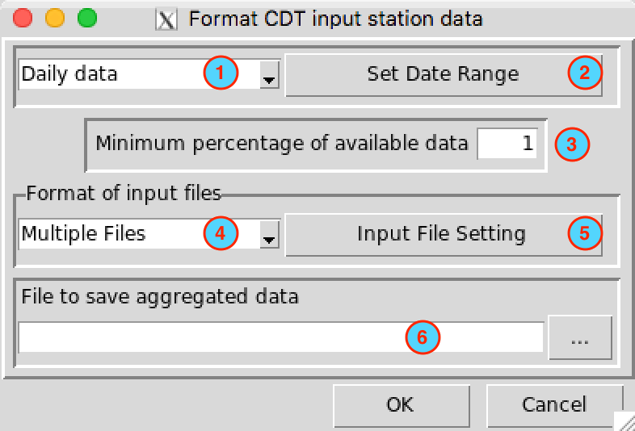
Select the time step of your data, there are three choices available: daily, dekadal and monthly data.
Set the date range by entering the start and end date to take account in CDT station data output.
Note
You can select a desired period for the final CDT station data output, even if each station data has different date range. The missing dates (which not match the selected period) from the stations will be filled with missing values.Enter here the minimum percentage (related to the period you selected) of non-missing values from a station to be accepted for the final CDT station data output.
Select the type of input files to be converted to CDT station format, two choices are available: Multiple Files and Single File.
Click on to set the parameters required for the input file.
Type the name of the file to save the formatted stations data or the full path to the file. You can also click on
 on the right, it opens a file dialog where you can select and/or type the name, path and type of file (txt or csv).
on the right, it opens a file dialog where you can select and/or type the name, path and type of file (txt or csv).
Multiple Files
In this case, each station has its own file. Several formats are possible, the data can have header (the column names) or not and can contain one or three variables in the following order: precipitation - maximum temperature - minimum temperature. Observations dates can be grouped or separated. The following examples give us an overview of possibility.
| 20090111 | 2.60 |
| 20090112 | 1.10 |
| 20090113 | 1.40 |
| 20090114 | 18.70 |
| 20090115 | 0.00 |
| 20090116 | 9.00 |
| year | month | day | precip | tmax | tmin |
| 2009 | 1 | 11 | 2.6 | 31.4 | 21.9 |
| 2009 | 1 | 12 | 1.1 | 29.9 | 22.4 |
| 2009 | 1 | 13 | 1.4 | 30 | 22.7 |
| 2009 | 1 | 14 | 18.7 | 29 | 23.7 |
| 2009 | 1 | 15 | 0 | 31.5 | 22.8 |
| year | month | dekad | tmax |
| 2010 | 8 | 1 | 29 |
| 2010 | 8 | 2 | 29.8 |
| 2010 | 8 | 3 | 29.6 |
| 2010 | 9 | 1 | 30.6 |
| 2010 | 9 | 2 | 30.6 |
| 2010081 | 9.50 | 29.00 | 19.70 |
| 2010082 | 3.80 | 29.80 | 19.40 |
| 2010083 | 15.70 | 29.60 | 20.30 |
| 2010091 | 2.70 | 30.60 | 19.80 |
| 2010092 | 0.00 | 30.60 | 20.70 |
| 2010093 | 10.50 | 30.20 | 20.40 |
| 2010 | 1 | 408.60 |
| 2010 | 2 | 108.80 |
| 2010 | 3 | 160.30 |
| 2010 | 4 | 13.20 |
| 2010 | 5 | 17.90 |
| 2010 | 6 | 56.40 |
| date | precip | tmax | tmin |
| 201001 | 408.6 | 31.1 | 23 |
| 201002 | 108.8 | 32.2 | 23.9 |
| 201003 | 160.3 | 31.3 | 23.3 |
| 201004 | 13.2 | 32 | 23.2 |
| 201005 | 17.9 | 31.7 | 22.6 |
As we can see, observations date can have two types of template formats: grouped and separated.
Grouped
There is no space between the years (YYYY), months (MM), dekads (D) or the days (DD)
Daily series :YYYYMMDD; YYYY: year, MM: month (01-12), DD: day (01-31)
Dekadal series :YYYYMMD; YYYY: year, MM: month (01-12), D: dekad (1-3)
Monthly series :YYYYMM; YYYY: year, MM: month (01-12)
Separated
Date separation depends on the field separator character of the file (space, tabs, comma, semicolon, …), the month and day format can be one or two digit.
Daily series :YYYY MM DD
Dekadal series :YYYY MM D
Monthly series :YYYY MM
Example:
As a simple illustration, suppose we have a daily precipitation data for 5 stations, each station has its own file and the name of each file should be the IDs of the station.
102001.txt
102021.txt
102038.txt
102304.txt
102305.txtThe format of data for each station must be the same. If we have a daily time series with separated date, the format of data in each file should be as follows
.....
2004 7 1 -99
2004 7 2 0
2004 7 3 10.6
2004 7 4 0
2004 7 5 0
2004 7 6 0
2004 7 7 0
2004 7 8 0
.....And the coordinates of the stations are saved in a separate file and in the format CDT coordinates file.
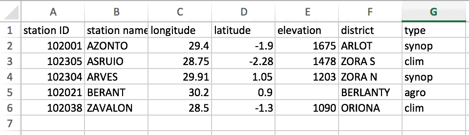
To provide all of this information to CDT, click on the button , it displays a dialog box
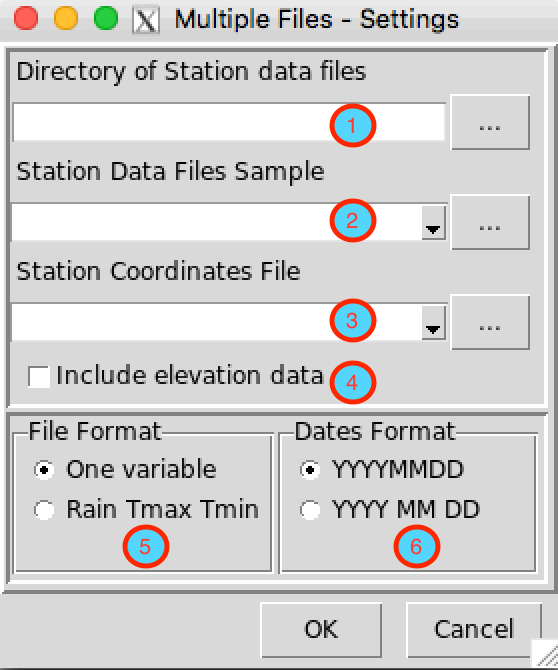
- Enter the full path to directory containing the station files, or browse through .
- Provide a sample of the data.
- Select the file containing the station coordinates, if it is not opened yet, open it from .
- Check this box, if you want to include the elevation data to the final CDT station data output, the CDT coordinates file must have a non-missing elevation data.
- Choose the number of climate variables in the file. On our example, we have only one variable (daily rainfall).
- Choose the format of date (grouped or separated). On our example, the date is separated with the format YYYY MM DD.
Click on the button  to execute.
to execute.
Single File
This time, all station data are already put together in a single file with a specific format which are described below. After selected Single File from the drop-down list “Format of input files” and clicked the button , which will display a dialog box.
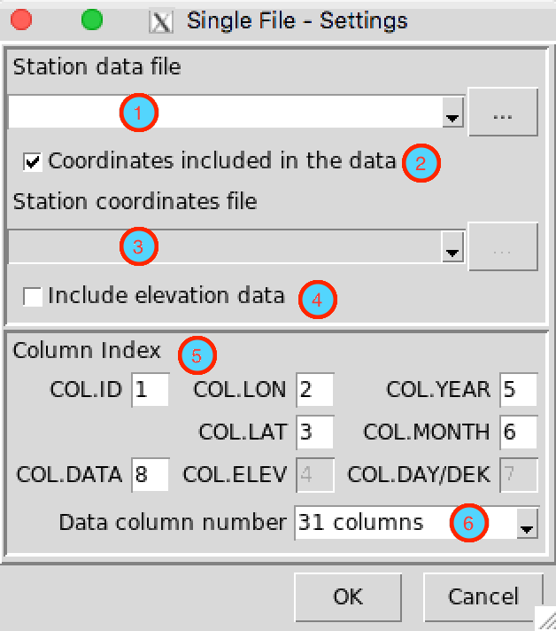
- Select the file containing the station data to be formatted, if the file is not loaded yet and therefore not listed, use to open it.
- Check this box, if the coordinates of the station are included in the data.
- Select the file containing the station coordinates, if it is not included in the file containing the data. If the file is not loaded yet and therefore not listed, use to open it.
- Check this box, if you want to include the elevation data to the final CDT station data output, provided that the data file contains an elevation data or the elevation data is not missing on the coordinates file.
- Specify the column number for:
- COL.ID: stations IDs
- COL.LON: longitude
- COL.LAT: latitude
- COL.ELEV: elevation data
- COL.YEAR: column containing the year
- COL.MONTH: month
- COL.DAY/DEK: column containing the day or dekad
- COL.DATA: column containing the climate variable or from which climate variable starts
- Select the number of columns containing the climate variable.
- For daily data, there are 2 possible formats:
1 column: the climate variable is placed in a single column.
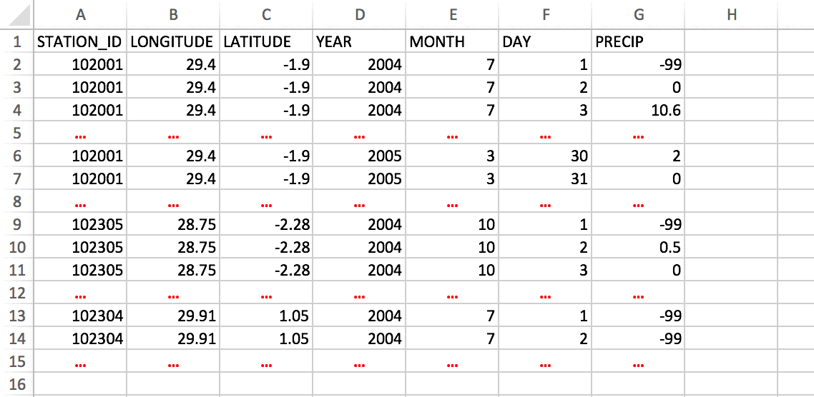
Format of data: one column, coordinates included31 columns: each month the climate variable is placed in 31 columns, one column is equivalent to one day.
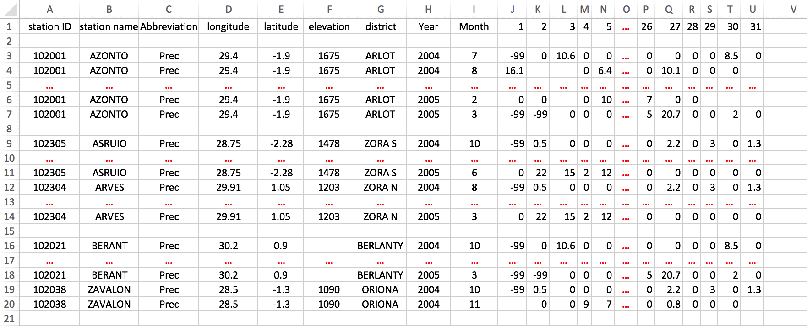
Format of data: 31 columns, coordinates included
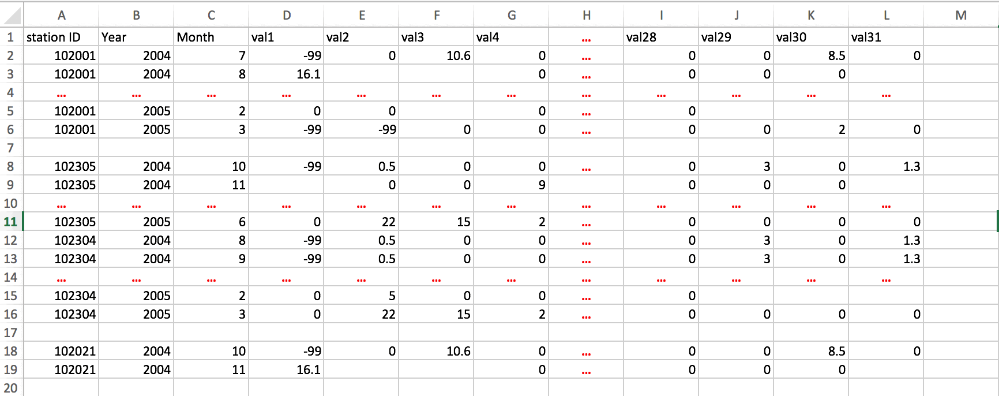
Format of data: 31 columns, coordinates on a separate fileNote
If you edit the data on Excel spreadsheet, you can leave blank the cells with missing values or fill it with missing values flag, then save it as a Comma Separated Values (CSV) file.
In addition, you can leave empty a whole line.
- Dekadal data, there are 3 possible formats:
- 1 column: the climate variable is placed in a single column.
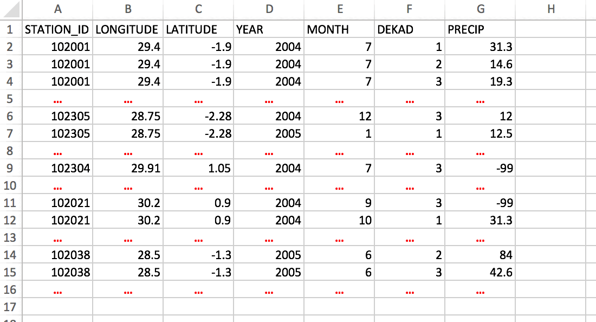
Format of data: one column, coordinates included - 3 columns: each month the climate variable is placed in 3 columns, one column is equivalent to one dekad.
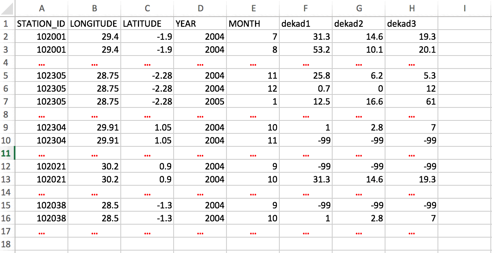
Format of data: 3 columns, coordinates included - 36 columns: each year the climate variable is placed in 36 columns, one column is equivalent to one dekad.
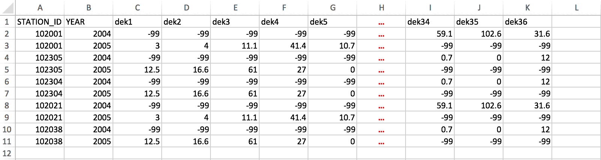
Format of data: 36 columns, without coordinates included
- 1 column: the climate variable is placed in a single column.
- Monthly data, there are 2 possible formats:
- 1 column: the climate variable is placed in a single column.
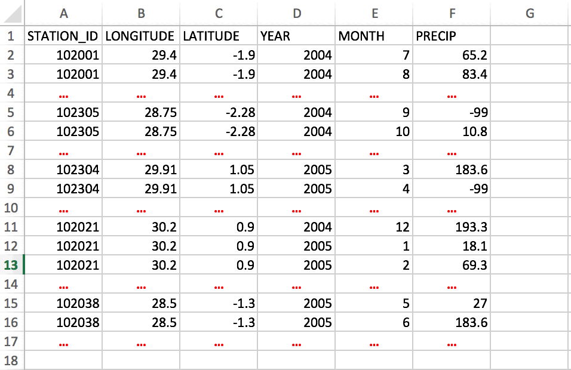
Format of data: one column, coordinates included - 12 columns: each year the climate variable is placed in 12 columns, one column is equivalent to one month.
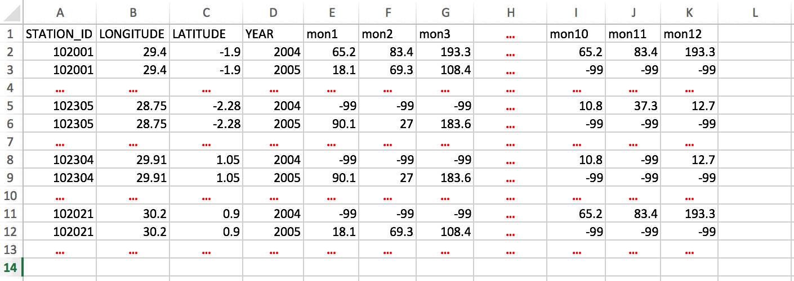
Format of data: 12 columns, coordinates included
- 1 column: the climate variable is placed in a single column.
- For daily data, there are 2 possible formats:
Click on the button to execute.